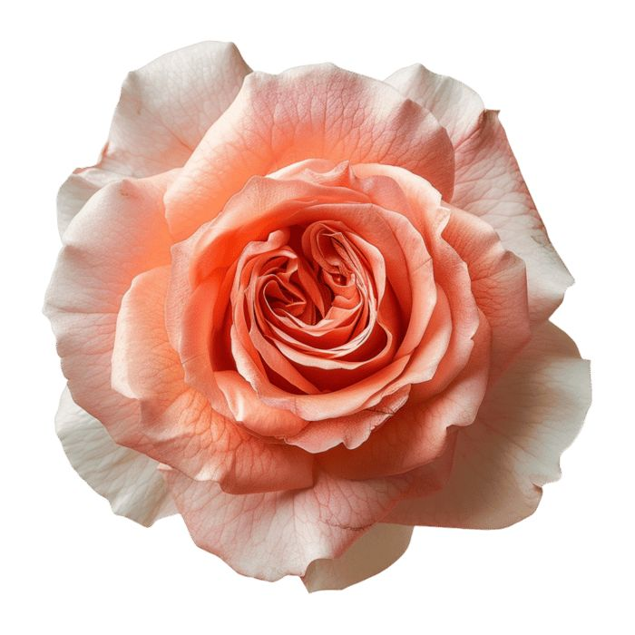
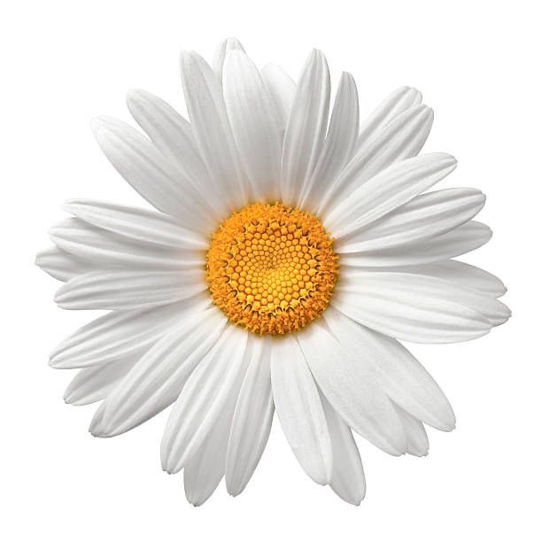
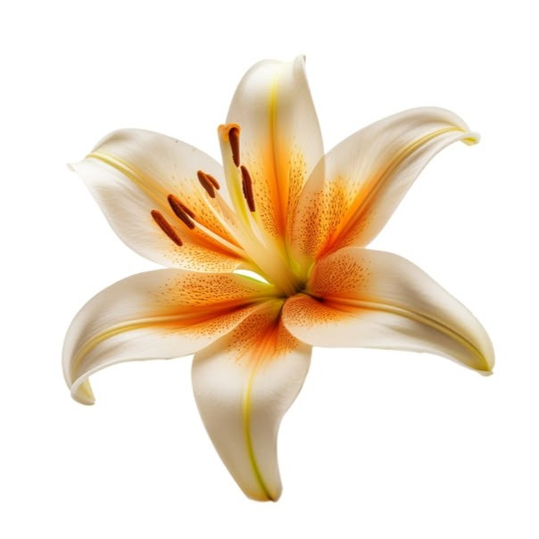
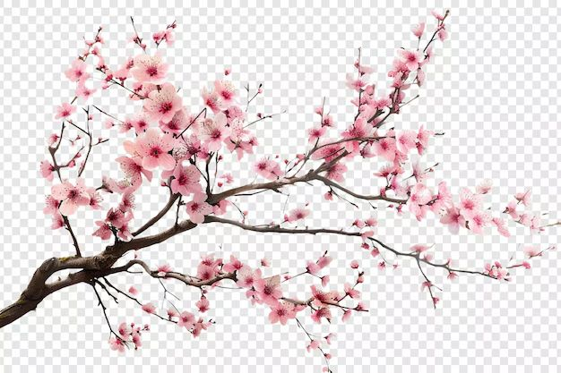

Главная
Галерея
Форма
DOM
Паспорт
Алгоритм
Главная
Галерея
Форма
DOM
Паспорт
Алгоритм

Один из самых известных садовых цветов.

Весенний цветок, который бывает разных оттенков.

Пион — пышный цветок с крупными бутонами и приятным ароматом.

Ромашка — простой и узнаваемый цветок с белыми лепестками.

Лилия — красивый цветок с крупными бутонами и приятным ароматом.

Орхидея — изящный цветок, который отличается большим разнообразием форм и оттенков.
Посмотреть таблицу цветов в галерее
Цветы играют важную роль в природе и жизни человека. Они украшают окружающий мир, используются в подарках и помогают создавать красивую атмосферу.
Некоторые цветы имеют необычные особенности:
А теперь несколько фактов по порядку:

*Узнать больше о цветах*